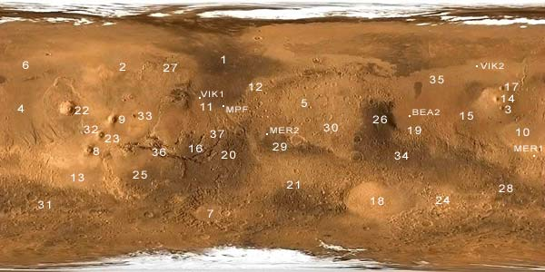

<html xmlns:v="urn:schemas-microsoft-com:vml"
xmlns:o="urn:schemas-microsoft-com:office:office"
xmlns:w="urn:schemas-microsoft-com:office:word"
xmlns="http://www.w3.org/TR/REC-html40">

<head>
<meta http-equiv=Content-Type content="text/html; charset=windows-1252">
<meta name=ProgId content=Word.Document>
<meta name=Generator content="Microsoft Word 11">
<meta name=Originator content="Microsoft Word 11">
<link rel=File-List href="g_files/filelist.xml">
<link rel=Edit-Time-Data href="g_files/editdata.mso">
<!--[if !mso]>
<style>
v\:* {behavior:url(#default#VML);}
o\:* {behavior:url(#default#VML);}
w\:* {behavior:url(#default#VML);}
.shape {behavior:url(#default#VML);}
</style>
<![endif]-->
<title>Problem G - Mars Buggy</title>
<!--[if gte mso 9]><xml>
 <o:DocumentProperties>
  <o:Author>Shahriar Manzoor</o:Author>
  <o:LastAuthor>Shahriar Manzoor</o:LastAuthor>
  <o:Revision>89</o:Revision>
  <o:TotalTime>319</o:TotalTime>
  <o:Created>2004-06-18T06:13:00Z</o:Created>
  <o:LastSaved>2006-03-11T15:45:00Z</o:LastSaved>
  <o:Pages>1</o:Pages>
  <o:Words>1191</o:Words>
  <o:Characters>6795</o:Characters>
  <o:Company>ACM/ICPC</o:Company>
  <o:Lines>56</o:Lines>
  <o:Paragraphs>15</o:Paragraphs>
  <o:CharactersWithSpaces>7971</o:CharactersWithSpaces>
  <o:Version>11.5606</o:Version>
 </o:DocumentProperties>
</xml><![endif]--><!--[if gte mso 9]><xml>
 <w:WordDocument>
  <w:View>Print</w:View>
  <w:Zoom>BestFit</w:Zoom>
  <w:SpellingState>Clean</w:SpellingState>
  <w:GrammarState>Clean</w:GrammarState>
  <w:ValidateAgainstSchemas/>
  <w:SaveIfXMLInvalid>false</w:SaveIfXMLInvalid>
  <w:IgnoreMixedContent>false</w:IgnoreMixedContent>
  <w:AlwaysShowPlaceholderText>false</w:AlwaysShowPlaceholderText>
  <w:BrowserLevel>MicrosoftInternetExplorer4</w:BrowserLevel>
 </w:WordDocument>
</xml><![endif]--><!--[if gte mso 9]><xml>
 <w:LatentStyles DefLockedState="false" LatentStyleCount="156">
 </w:LatentStyles>
</xml><![endif]-->
<style>
<!--
 /* Font Definitions */
 @font-face
	{font-family:"Arial Unicode MS";
	panose-1:2 11 6 4 2 2 2 2 2 4;
	mso-font-charset:128;
	mso-generic-font-family:swiss;
	mso-font-pitch:variable;
	mso-font-signature:-1 -369098753 63 0 4129279 0;}
@font-face
	{font-family:"\@Arial Unicode MS";
	panose-1:2 11 6 4 2 2 2 2 2 4;
	mso-font-charset:128;
	mso-generic-font-family:swiss;
	mso-font-pitch:variable;
	mso-font-signature:-1 -369098753 63 0 4129279 0;}
 /* Style Definitions */
 p.MsoNormal, li.MsoNormal, div.MsoNormal
	{mso-style-parent:"";
	margin:0in;
	margin-bottom:.0001pt;
	mso-pagination:widow-orphan;
	font-size:12.0pt;
	font-family:"Times New Roman";
	mso-fareast-font-family:"Times New Roman";}
h1
	{margin:0in;
	margin-bottom:.0001pt;
	mso-pagination:widow-orphan;
	mso-outline-level:1;
	font-size:12.0pt;
	font-family:"Times New Roman";
	color:black;
	font-weight:bold;}
h2
	{mso-style-next:Normal;
	margin:0in;
	margin-bottom:.0001pt;
	mso-pagination:widow-orphan;
	page-break-after:avoid;
	mso-outline-level:2;
	font-size:18.0pt;
	font-family:Arial;
	font-weight:bold;}
h3
	{mso-margin-top-alt:auto;
	margin-right:0in;
	mso-margin-bottom-alt:auto;
	margin-left:0in;
	mso-pagination:widow-orphan;
	mso-outline-level:3;
	font-size:13.5pt;
	font-family:"Times New Roman";
	font-weight:bold;}
h4
	{mso-style-next:Normal;
	margin:0in;
	margin-bottom:.0001pt;
	mso-pagination:widow-orphan;
	page-break-after:avoid;
	mso-outline-level:4;
	tab-stops:45.8pt 91.6pt 137.4pt 183.2pt 229.0pt 274.8pt 320.6pt 366.4pt 412.2pt 458.0pt 503.8pt 549.6pt 595.4pt 641.2pt 687.0pt 732.8pt;
	font-size:16.0pt;
	mso-bidi-font-size:12.0pt;
	font-family:Arial;
	font-weight:bold;}
h5
	{mso-style-next:Normal;
	margin:0in;
	margin-bottom:.0001pt;
	mso-pagination:widow-orphan;
	mso-outline-level:5;
	font-size:12.0pt;
	mso-bidi-font-size:10.0pt;
	font-family:"Times New Roman";
	color:black;
	font-weight:normal;}
p.MsoHeading7, li.MsoHeading7, div.MsoHeading7
	{mso-style-next:Normal;
	margin:0in;
	margin-bottom:.0001pt;
	mso-pagination:widow-orphan;
	page-break-after:avoid;
	mso-outline-level:7;
	mso-layout-grid-align:none;
	text-autospace:none;
	font-size:11.0pt;
	mso-bidi-font-size:10.0pt;
	font-family:"Courier New";
	mso-fareast-font-family:"Times New Roman";
	font-weight:bold;}
p.MsoHeader, li.MsoHeader, div.MsoHeader
	{margin:0in;
	margin-bottom:.0001pt;
	mso-pagination:widow-orphan;
	font-size:12.0pt;
	font-family:"Times New Roman";
	mso-fareast-font-family:"Times New Roman";}
p.MsoFooter, li.MsoFooter, div.MsoFooter
	{margin:0in;
	margin-bottom:.0001pt;
	mso-pagination:widow-orphan;
	font-size:12.0pt;
	font-family:"Times New Roman";
	mso-fareast-font-family:"Times New Roman";}
p.MsoCaption, li.MsoCaption, div.MsoCaption
	{mso-style-next:Normal;
	margin:0in;
	margin-bottom:.0001pt;
	mso-pagination:widow-orphan;
	font-size:18.0pt;
	font-family:Arial;
	mso-fareast-font-family:"Times New Roman";
	font-weight:bold;}
p.MsoBodyText2, li.MsoBodyText2, div.MsoBodyText2
	{margin:0in;
	margin-bottom:.0001pt;
	text-align:justify;
	mso-pagination:widow-orphan;
	font-size:12.0pt;
	mso-bidi-font-size:10.0pt;
	font-family:"Times New Roman";
	mso-fareast-font-family:"Times New Roman";
	color:black;
	mso-bidi-font-weight:bold;}
p
	{mso-margin-top-alt:auto;
	margin-right:0in;
	mso-margin-bottom-alt:auto;
	margin-left:0in;
	mso-pagination:widow-orphan;
	font-size:12.0pt;
	font-family:"Times New Roman";
	mso-fareast-font-family:"Times New Roman";}
pre
	{margin:0in;
	margin-bottom:.0001pt;
	mso-pagination:widow-orphan;
	tab-stops:45.8pt 91.6pt 137.4pt 183.2pt 229.0pt 274.8pt 320.6pt 366.4pt 412.2pt 458.0pt 503.8pt 549.6pt 595.4pt 641.2pt 687.0pt 732.8pt;
	font-size:10.0pt;
	font-family:"Courier New";
	mso-fareast-font-family:"Courier New";}
p.preformatted, li.preformatted, div.preformatted
	{mso-style-name:preformatted;
	margin:0in;
	margin-bottom:.0001pt;
	mso-pagination:widow-orphan;
	layout-grid-mode:char;
	font-size:10.0pt;
	font-family:"Courier New";
	mso-fareast-font-family:"Times New Roman";}
span.StyleArial16pt
	{mso-style-name:"Style Arial 16 pt";
	mso-ansi-font-size:16.0pt;
	font-family:Arial;
	mso-ascii-font-family:Arial;
	mso-hansi-font-family:Arial;
	mso-bidi-font-family:Arial;
	font-weight:bold;}
span.SpellE
	{mso-style-name:"";
	mso-spl-e:yes;}
span.GramE
	{mso-style-name:"";
	mso-gram-e:yes;}
@page Section1
	{size:8.5in 11.0in;
	margin:1.0in 1.0in 1.0in 1.0in;
	mso-header-margin:.5in;
	mso-footer-margin:.5in;
	mso-paper-source:0;}
div.Section1
	{page:Section1;}
-->
</style>
<!--[if gte mso 10]>
<style>
 /* Style Definitions */
 table.MsoNormalTable
	{mso-style-name:"Table Normal";
	mso-tstyle-rowband-size:0;
	mso-tstyle-colband-size:0;
	mso-style-noshow:yes;
	mso-style-parent:"";
	mso-padding-alt:0in 5.4pt 0in 5.4pt;
	mso-para-margin:0in;
	mso-para-margin-bottom:.0001pt;
	mso-pagination:widow-orphan;
	font-size:10.0pt;
	font-family:"Times New Roman";
	mso-ansi-language:#0400;
	mso-fareast-language:#0400;
	mso-bidi-language:#0400;}
</style>
<![endif]--><!--[if gte mso 9]><xml>
 <o:shapedefaults v:ext="edit" spidmax="9218"/>
</xml><![endif]--><!--[if gte mso 9]><xml>
 <o:shapelayout v:ext="edit">
  <o:idmap v:ext="edit" data="1"/>
 </o:shapelayout></xml><![endif]-->
</head>

<body lang=EN-US style='tab-interval:.5in'>

<div class=Section1>

<p class=MsoNormal align=center style='text-align:center'><b style='mso-bidi-font-weight:
normal'><span style='font-size:28.0pt;mso-bidi-font-size:12.0pt;font-family:
Arial'>Problem G</span></b><span style='font-family:Arial'><br>
</span><b style='mso-bidi-font-weight:normal'><span style='font-size:20.0pt;
mso-bidi-font-size:24.0pt;font-family:Arial'>Mars Buggy</span></b><span
style='font-family:Arial'><br>
<b style='mso-bidi-font-weight:normal'>Input: </b><span style='mso-bidi-font-weight:
bold'>Standard Input</span></span><span style='mso-bidi-font-size:10.0pt;
font-family:Arial;color:black;mso-bidi-font-weight:bold'><o:p></o:p></span></p>

<p class=MsoNormal align=center style='text-align:center'><b style='mso-bidi-font-weight:
normal'><span style='font-family:Arial'>Output: </span></b><span
style='font-family:Arial;mso-bidi-font-weight:bold'>Standard Output </span><span
style='mso-bidi-font-size:10.0pt;font-family:Arial;color:black;mso-bidi-font-weight:
bold'><o:p></o:p></span></p>

<p class=MsoNormal style='text-align:justify'>&nbsp;</p>

<p class=MsoNormal align=center style='text-align:center'><br>
The surface of Mars (picture: http://www.marsbase.net/m/mars-map.php) </p>

<p style='text-align:justify'>Mars is our neighbor in the solar system, about
1.5 times as far from the sun as the earth. In the past years we have seen
several unmanned expeditions to the planet, some more <span class=SpellE>succesful</span>
than others. </p>

<p style='text-align:justify'>Imagine some time in the (near) future when Mars
is <span class=SpellE>colonised</span> with several settlements scattered
around the globe. Each settlement is <span class=SpellE>equiped</span> with a
large array of solar panels and batteries to supply the energy needs of its
inhabitants. Transport between the settlements is maintained by electric
buggies that deliver people and goods around the planet. The range of these
buggies is limited by the capacity of their battery and the payload they carry.
To go from one place to the other, they may have to go from settlement to
settlement, recharging the battery for every interval. </p>

<h1><span style='font-size:16.0pt;font-family:Arial'>The Problem<o:p></o:p></span></h1>

<p style='text-align:justify'>You are hired by the Mars Public Transportation
System (MPTS) to write their route planning software. Based on a list of
settlements, the program should process transportation request for individual
buggies and print a list of intermediate settlements where the buggy will
recharge. Each interval along the trip should, of course, be shorter or equal
to the range of the particular buggy, but within that restriction the total
length of the trip should be as short as possible. In case it is impossible to
make the trip with a buggy with the given range, the program should calculate
the minimum range a buggy should have to make the trip. </p>

<h1><span style='font-size:16.0pt;font-family:Arial'>The Facts<o:p></o:p></span></h1>

<p style='text-align:justify'>For this problem we'll consider Mars to be a perfectly
flat sphere with a radius of 3390 kilometer. Places on Mars are <span
class=SpellE>localised</span> by giving their latitude and longitude in
radians. The <span class=SpellE>northpole</span> is at latitude &#960;/2, the
equator has latitude 0 and the <span class=SpellE>southpole</span> is at
latitude -&#960;/2. Longitude is given from east to west with a value from 0 to
2&#960;, starting at an arbitrary meridian called the zero-meridian.</p>

<p style='text-align:justify'>Between two places a buggy will always take the
shortest possible <span class=GramE>route, that</span> is along a great circle.
MPTS identifies settlements with a unique string of <span class=SpellE>upto</span>
20 characters, the location code. Legal characters for a location code are:
upper- and lowercase letters, digits and the underscore; space characters are
not allowed. For every settlement the location of the MPTS transfer station is
listed by giving the location code and its latitude and longitude in radians,
as defined above. Loading, unloading and recharging takes place at these
transfer stations, which can be considered dimensionless points on the surface
of Mars. </p>

<p style='text-align:justify'>Considering accuracy, MPTS has a regulation that
you should follow in your program<span class=GramE>:</span><br>
Distances between settlements are to be treated as an integral number of
kilometers when adding, comparing and reporting them. When you calculate the
distance between two settlements, it is unavoidable to make use of floating
point calculations. Once calculated, however, this distance should be rounded
to the nearest integral number of kilometers. <span class=SpellE>Surprizingly</span>
enough, distances between settlements on Mars are such that their fractional
part is never so close to 0.5 kilometer that rounding would become ambiguous. </p>

<h5 style='tab-stops:45.8pt 91.6pt 137.4pt 183.2pt 229.0pt 274.8pt 320.6pt 366.4pt 412.2pt 458.0pt 503.8pt 549.6pt 595.4pt 641.2pt 687.0pt 732.8pt'><span
class=StyleArial16pt><span style='font-size:16.0pt;mso-bidi-font-size:10.0pt'>Input</span></span><span
class=StyleArial16pt><span style='font-size:16.0pt;mso-bidi-font-size:10.0pt;
mso-fareast-font-family:"Arial Unicode MS"'><o:p></o:p></span></span></h5>

<p style='text-align:justify'>The input will consist of several scenarios.</p>

<p style='text-align:justify'>Each scenario starts with an integer between 2
and 100, the number of locations on Mars, on a line by itself. Then there is a
line for each location stating its MPTS location code, its latitude and its
longitude, in that order. Latitude and longitude are given in radians with 6
decimals following the decimal dot.</p>

<p style='text-align:justify'><span class=GramE>Then follows a list of
requests.</span> The number of requests (between 1 and 100) appears on a line
by itself, followed by one line for each request stating the location code of
the starting settlement, the location code of the destination settlement and
the range of the buggy, in that order. The two location codes will always be
different. The range will be given in kilometers.<br>
Items on a line will be separated by one or more spaces. Lines will never be longer
than 128 characters.</p>

<p style='text-align:justify'><br>
A scenario with 0 locations and 0 requests will terminate the input. This
scenario should not be processed. </p>

<h4><span class=StyleArial16pt><span style='mso-bidi-font-weight:normal'>Output
</span></span><span class=StyleArial16pt><span style='font-size:12.0pt;
font-family:"Times New Roman";mso-bidi-font-weight:normal'><o:p></o:p></span></span></h4>

<p class=MsoNormal style='text-align:justify'>For each scenario state the
scenario number (starting from 1) on a line by itself in the format
&quot;Scenario X:<span class=GramE>&quot;,</span> followed by a line containing
30 hyphens ('-').</p>

<p class=MsoNormal style='text-align:justify'><o:p>&nbsp;</o:p></p>

<p class=MsoNormal style='text-align:justify'>Then for each request, state the
request in the following format on a line by itself: &quot;From X to Y with
range Z km:<span class=GramE>&quot;.</span> If a route from start to
destination is possible with that range, output all settlements, including
start and destination, in the order visited together with their <span
class=SpellE>cummulative</span> distance along the shortest possible route, in
the format &quot;X at Y km&quot;. If no route is possible for that range,
output one line: &quot;No route for this range, minimum required range is X km.<span
class=GramE>&quot;.</span> Follow the output of each request with a line
containing 30 hyphens.\</p>

<p class=MsoNormal style='text-align:justify'><o:p>&nbsp;</o:p></p>

<p class=MsoNormal style='text-align:justify'>Separate two scenarios by a blank
line.</p>

<p class=MsoNormal style='text-align:justify'><o:p>&nbsp;</o:p></p>

<p class=MsoNormal style='text-align:justify'>Distances should be printed in
kilometers. X, Y and Z in the format strings should be replaced by their
appropriate values and output should be printed without the surrounding quotes.<br>
A special corrector will check your program's output, so if more than one
possible answer exists, print any one. When printing a route it is OK to add
extra spaces between items in a line of output as long as the line is never
longer than 128 characters. </p>

<p class=MsoNormal style='text-align:justify;tab-stops:143.25pt'><span
style='mso-bidi-font-size:10.0pt'><o:p>&nbsp;</o:p></span></p>

<h1 style='tab-stops:45.8pt 91.6pt 137.4pt 183.2pt 229.0pt 274.8pt 320.6pt 366.4pt 412.2pt 458.0pt 503.8pt 549.6pt 595.4pt 641.2pt 687.0pt 732.8pt'><span
style='font-size:16.0pt;mso-bidi-font-size:12.0pt;font-family:Arial;mso-bidi-font-weight:
normal;mso-bidi-font-style:italic'>Sample Input <span
style='mso-spacerun:yes'>                    </span>Output for Sample Input</span><span
style='font-size:16.0pt;mso-bidi-font-size:12.0pt;font-family:Arial'><o:p></o:p></span></h1>

<table class=MsoNormalTable border=1 cellspacing=0 cellpadding=0 width=819
 style='width:491.4pt;background:#CCCCCC;border-collapse:collapse;border:none;
 mso-border-alt:solid windowtext .5pt;mso-padding-alt:0in 5.4pt 0in 5.4pt'>
 <tr style='mso-yfti-irow:0;mso-yfti-firstrow:yes;mso-yfti-lastrow:yes'>
  <td width=330 valign=top style='width:198.05pt;border:solid windowtext 1.0pt;
  mso-border-alt:solid windowtext .5pt;padding:0in 5.4pt 0in 5.4pt'><pre><b
  style='mso-bidi-font-weight:normal'><span style='font-size:8.0pt'>11<o:p></o:p></span></b></pre><pre><span
  class=SpellE><b style='mso-bidi-font-weight:normal'><span style='font-size:
  8.0pt'>Lousberg</span></b></span><b style='mso-bidi-font-weight:normal'><span
  style='font-size:8.0pt'><span style='mso-spacerun:yes'>        </span>0.500000<span style='mso-spacerun:yes'>   </span>1.000000<o:p></o:p></span></b></pre><pre><span
  class=SpellE><b style='mso-bidi-font-weight:normal'><span style='font-size:
  8.0pt'>Rasschaert</span></b></span><b style='mso-bidi-font-weight:normal'><span
  style='font-size:8.0pt'><span style='mso-spacerun:yes'>      </span>0.000000<span style='mso-spacerun:yes'>   </span>0.500000<o:p></o:p></span></b></pre><pre><b
  style='mso-bidi-font-weight:normal'><span style='font-size:8.0pt'>Lubbers<span style='mso-spacerun:yes'>         </span>0.000000<span style='mso-spacerun:yes'>   </span>1.000000<o:p></o:p></span></b></pre><pre><span
  class=SpellE><b style='mso-bidi-font-weight:normal'><span style='font-size:
  8.0pt'>van_den_Hoogen</span></b></span><b style='mso-bidi-font-weight:normal'><span
  style='font-size:8.0pt'> -0.500000<span style='mso-spacerun:yes'>   </span>1.000000<o:p></o:p></span></b></pre><pre><span
  class=SpellE><b style='mso-bidi-font-weight:normal'><span style='font-size:
  8.0pt'>Bink</span></b></span><b style='mso-bidi-font-weight:normal'><span
  style='font-size:8.0pt'><span style='mso-spacerun:yes'>            </span>0.000000<span style='mso-spacerun:yes'>   </span>1.500000<o:p></o:p></span></b></pre><pre><span
  class=SpellE><b style='mso-bidi-font-weight:normal'><span style='font-size:
  8.0pt'>van_de_Kieft</span></b></span><b style='mso-bidi-font-weight:normal'><span
  style='font-size:8.0pt'><span style='mso-spacerun:yes'>    </span>0.200000<span style='mso-spacerun:yes'>   </span>0.800000<o:p></o:p></span></b></pre><pre><span
  class=SpellE><b style='mso-bidi-font-weight:normal'><span style='font-size:
  8.0pt'>Bronkhorst</span></b></span><b style='mso-bidi-font-weight:normal'><span
  style='font-size:8.0pt'><span style='mso-spacerun:yes'>     </span>-0.300000<span style='mso-spacerun:yes'>   </span>1.100000<o:p></o:p></span></b></pre><pre><span
  class=SpellE><b style='mso-bidi-font-weight:normal'><span style='font-size:
  8.0pt'>van_Dijk</span></b></span><b style='mso-bidi-font-weight:normal'><span
  style='font-size:8.0pt'><span style='mso-spacerun:yes'>        </span>0.001000<span style='mso-spacerun:yes'>   </span>1.001000<o:p></o:p></span></b></pre><pre><span
  class=SpellE><b style='mso-bidi-font-weight:normal'><span style='font-size:
  8.0pt'>Zijlstra</span></b></span><b style='mso-bidi-font-weight:normal'><span
  style='font-size:8.0pt'><span style='mso-spacerun:yes'>        </span>0.010000<span style='mso-spacerun:yes'>   </span>1.020000<o:p></o:p></span></b></pre><pre><span
  class=SpellE><b style='mso-bidi-font-weight:normal'><span style='font-size:
  8.0pt'>Duponselle</span></b></span><b style='mso-bidi-font-weight:normal'><span
  style='font-size:8.0pt'><span style='mso-spacerun:yes'>     </span>-0.250000<span style='mso-spacerun:yes'>   </span>0.900000<o:p></o:p></span></b></pre><pre><span
  class=SpellE><b style='mso-bidi-font-weight:normal'><span style='font-size:
  8.0pt'>Ramnath</span></b></span><b style='mso-bidi-font-weight:normal'><span
  style='font-size:8.0pt'><span style='mso-spacerun:yes'>        </span>-0.400000<span style='mso-spacerun:yes'>   </span>0.600000<o:p></o:p></span></b></pre><pre><b
  style='mso-bidi-font-weight:normal'><span style='font-size:8.0pt'>3<o:p></o:p></span></b></pre><pre><span
  class=SpellE><b style='mso-bidi-font-weight:normal'><span style='font-size:
  8.0pt'>Lousberg</span></b></span><b style='mso-bidi-font-weight:normal'><span
  style='font-size:8.0pt'><span style='mso-spacerun:yes'>       </span><span
  class=SpellE>van_den_Hoogen</span><span style='mso-spacerun:yes'>     </span>1200<o:p></o:p></span></b></pre><pre><span
  class=SpellE><b style='mso-bidi-font-weight:normal'><span style='font-size:
  8.0pt'>Rasschaert</span></b></span><b style='mso-bidi-font-weight:normal'><span
  style='font-size:8.0pt'><span style='mso-spacerun:yes'>     </span><span
  class=SpellE>Ramnath</span><span style='mso-spacerun:yes'>            </span>1000<o:p></o:p></span></b></pre><pre><b
  style='mso-bidi-font-weight:normal'><span style='font-size:8.0pt'>Lubbers<span style='mso-spacerun:yes'>        </span><span
  class=SpellE>van_Dijk</span><span style='mso-spacerun:yes'>             </span>10<o:p></o:p></span></b></pre><pre><b
  style='mso-bidi-font-weight:normal'><span style='font-size:8.0pt'>0<o:p></o:p></span></b></pre><pre><b
  style='mso-bidi-font-weight:normal'><span style='font-size:8.0pt'>0<o:p></o:p></span></b></pre><pre><b><span
  style='font-size:8.0pt'><o:p>&nbsp;</o:p></span></b></pre></td>
  <td width=489 valign=top style='width:293.35pt;border:solid windowtext 1.0pt;
  border-left:none;mso-border-left-alt:solid windowtext .5pt;mso-border-alt:
  solid windowtext .5pt;padding:0in 2.9pt 0in 2.9pt'><pre><b style='mso-bidi-font-weight:
  normal'><span style='font-size:8.0pt'>Scenario 1:<o:p></o:p></span></b></pre><pre><b
  style='mso-bidi-font-weight:normal'><span style='font-size:8.0pt'>------------------------------<o:p></o:p></span></b></pre><pre><b
  style='mso-bidi-font-weight:normal'><span style='font-size:8.0pt'>From <span
  class=SpellE>Lousberg</span> to <span class=SpellE>van_den_Hoogen</span> with range 1200 km:<o:p></o:p></span></b></pre><pre><span
  class=SpellE><b style='mso-bidi-font-weight:normal'><span style='font-size:
  8.0pt'>Lousberg</span></b></span><b style='mso-bidi-font-weight:normal'><span
  style='font-size:8.0pt'><span style='mso-spacerun:yes'>             </span>at<span style='mso-spacerun:yes'>     </span>0 km.<o:p></o:p></span></b></pre><pre><span
  class=SpellE><span class=GramE><b style='mso-bidi-font-weight:normal'><span
  style='font-size:8.0pt'>van_de_Kieft</span></b></span></span><b
  style='mso-bidi-font-weight:normal'><span style='font-size:8.0pt'><span style='mso-spacerun:yes'>         </span>at<span style='mso-spacerun:yes'>  </span>1198 km.<o:p></o:p></span></b></pre><pre><b
  style='mso-bidi-font-weight:normal'><span style='font-size:8.0pt'>Lubbers<span style='mso-spacerun:yes'>              </span><span
  class=GramE>at<span style='mso-spacerun:yes'>  </span>2154</span> km.<o:p></o:p></span></b></pre><pre><span
  class=SpellE><b style='mso-bidi-font-weight:normal'><span style='font-size:
  8.0pt'>Duponselle</span></b></span><b style='mso-bidi-font-weight:normal'><span
  style='font-size:8.0pt'><span style='mso-spacerun:yes'>           </span><span
  class=GramE>at<span style='mso-spacerun:yes'>  </span>3065</span> km.<o:p></o:p></span></b></pre><pre><span
  class=SpellE><span class=GramE><b style='mso-bidi-font-weight:normal'><span
  style='font-size:8.0pt'>van_den_Hoogen</span></b></span></span><b
  style='mso-bidi-font-weight:normal'><span style='font-size:8.0pt'><span style='mso-spacerun:yes'>       </span>at<span style='mso-spacerun:yes'>  </span>3969 km.<o:p></o:p></span></b></pre><pre><b
  style='mso-bidi-font-weight:normal'><span style='font-size:8.0pt'>------------------------------<o:p></o:p></span></b></pre><pre><b
  style='mso-bidi-font-weight:normal'><span style='font-size:8.0pt'>From <span
  class=SpellE>Rasschaert</span> to <span class=SpellE>Ramnath</span> with range 1000 km:<o:p></o:p></span></b></pre><pre><b
  style='mso-bidi-font-weight:normal'><span style='font-size:8.0pt'>No route for this range, minimum required range is 1217 km.<o:p></o:p></span></b></pre><pre><b
  style='mso-bidi-font-weight:normal'><span style='font-size:8.0pt'>------------------------------<o:p></o:p></span></b></pre><pre><b
  style='mso-bidi-font-weight:normal'><span style='font-size:8.0pt'>From Lubbers to <span
  class=SpellE>van_Dijk</span> with range 10 km:<o:p></o:p></span></b></pre><pre><b
  style='mso-bidi-font-weight:normal'><span style='font-size:8.0pt'>Lubbers<span style='mso-spacerun:yes'>              </span>at<span style='mso-spacerun:yes'>     </span>0 km.<o:p></o:p></span></b></pre><pre><span
  class=SpellE><span class=GramE><b style='mso-bidi-font-weight:normal'><span
  style='font-size:8.0pt'>van_Dijk</span></b></span></span><b style='mso-bidi-font-weight:
  normal'><span style='font-size:8.0pt'><span style='mso-spacerun:yes'>             </span>at<span style='mso-spacerun:yes'>     </span>5 km.<o:p></o:p></span></b></pre><pre><b
  style='mso-bidi-font-weight:normal'><span style='font-size:8.0pt'>------------------------------<o:p></o:p></span></b></pre>
  <p class=MsoNormal style='tab-stops:45.8pt 91.6pt 137.4pt 183.2pt 229.0pt 274.8pt 320.6pt 366.4pt 412.2pt 458.0pt 503.8pt 549.6pt 595.4pt 641.2pt 687.0pt 732.8pt'><b><span
  style='font-size:8.0pt;font-family:"Courier New";color:black'><o:p>&nbsp;</o:p></span></b></p>
  </td>
 </tr>
</table>

<div class=MsoNormal align=center style='text-align:center;tab-stops:45.8pt 91.6pt 137.4pt 183.2pt 229.0pt 274.8pt 320.6pt 366.4pt 412.2pt 458.0pt 503.8pt 549.6pt 595.4pt 641.2pt 687.0pt 732.8pt'>

<hr size=2 width="100%" align=center>

</div>

<p class=MsoCaption style='tab-stops:45.8pt 91.6pt 137.4pt 183.2pt 229.0pt 274.8pt 320.6pt 366.4pt 412.2pt 458.0pt 503.8pt 549.6pt 595.4pt 641.2pt 687.0pt 732.8pt'><span
style='font-size:12.0pt'>Problem setter: Joachim <span class=SpellE>Wulff</span>,
EPS<o:p></o:p></span></p>

<p style='margin:0in;margin-bottom:.0001pt;tab-stops:45.8pt 91.6pt 137.4pt 183.2pt 229.0pt 274.8pt 320.6pt 366.4pt 412.2pt 458.0pt 503.8pt 549.6pt 595.4pt 641.2pt 687.0pt 732.8pt'><b
style='mso-bidi-font-weight:normal'><span style='font-family:Arial'>Special
Thanks: Derek <span class=SpellE>Kisman</span>, EPS<o:p></o:p></span></b></p>

<p class=MsoNormal style='tab-stops:45.8pt 91.6pt 137.4pt 183.2pt 229.0pt 274.8pt 320.6pt 366.4pt 412.2pt 458.0pt 503.8pt 549.6pt 595.4pt 641.2pt 687.0pt 732.8pt'><o:p>&nbsp;</o:p></p>

<h1 style='text-align:justify'>Epilogue (you might need it to solve the
problem)</h1>

<p style='text-align:justify'>There are many formulas to calculate the distance
between two points, given their latitude and longitude on a perfect sphere. One
of the simplest is based on the 'Law of Cosines': </p>

<pre style='text-align:justify'>a = <span class=GramE>sin(</span>lat1) * sin(lat2) </pre><pre
style='text-align:justify'>b = <span class=SpellE><span class=GramE>cos</span></span><span
class=GramE>(</span>lat1) * <span class=SpellE>cos</span>(lat2) * <span
class=SpellE>cos</span>(lon2 - lon1) </pre><pre style='text-align:justify'>c = <span
class=SpellE><span class=GramE>arccos</span></span><span class=GramE>(</span>a + b) </pre><pre
style='text-align:justify'>d = R * c </pre>

<p class=MsoNormal style='text-align:justify'>Here R is the radius of the
sphere and d is the distance; a, b and c are intermediates.<br>
This formula, although correct, suffers from accuracy errors when implemented
on a computer (or calculated by hand using slide rule or lookup tables). To
cope with the inaccuracy, navigators use a special set of <span class=SpellE>trignometric</span>
functions, one being the <span class=SpellE><i>versine</i></span> which is
defined as: <span class=SpellE>versine</span>(x) = 1 - <span class=SpellE>cos</span>(x),
and <span class=GramE>an other</span>, <span class=SpellE><i>haversine</i></span>,
being half that value. It is easy to see that <span class=SpellE>haversine</span>(x)
= (1 - <span class=SpellE>cos</span>(x))/2 = sin^2(x/2).</p>

<p style='text-align:justify'>The so called '<span class=SpellE>Haversine</span>
Formula' uses this function to calculate the distance, without the loss of
accuracy from the formula stated above: </p>

<pre style='text-align:justify'>a = <span class=SpellE><span class=GramE>haversine</span></span><span
class=GramE>(</span>lat2 - lat1)</pre><pre style='text-align:justify'>b = <span
class=SpellE><span class=GramE>cos</span></span><span class=GramE>(</span>lat1) * <span
class=SpellE>cos</span>(lat2) * <span class=SpellE>haversine</span>(lon2 - lon1)</pre><pre
style='text-align:justify'>c = 2 * <span class=GramE>atan2(</span><span
class=SpellE>sqrt</span>(a + b), <span class=SpellE>sqrt</span>(1 - a - b))</pre><pre
style='text-align:justify'>d = R * c</pre><pre style='text-align:justify'><o:p>&nbsp;</o:p></pre>

<p class=MsoNormal style='text-align:justify'>Here <span class=SpellE>sqrt</span>(x)
is the square root function, and <span class=GramE>atan2(</span>num, den) is
the <span class=SpellE>arctangens</span> function <span class=SpellE>atan</span>(num/den)
that also gives the correct answer when den=0. </p>

<p class=MsoNormal style='text-align:justify;tab-stops:45.8pt 91.6pt 137.4pt 183.2pt 229.0pt 274.8pt 320.6pt 366.4pt 412.2pt 458.0pt 503.8pt 549.6pt 595.4pt 641.2pt 687.0pt 732.8pt'><o:p>&nbsp;</o:p></p>

</div>

</body>

</html>
